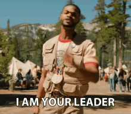

LEADERSHIP INFORMATION
- Youth Committee President for Indo-American Society of NC (2017-current)
- Help to organize events that represent Indian culture and raise money for charities.
- IT is for Girls Film Festival Session Assistant (2016 summer and 2017 summer)
- IT is for Girls is an annual summer camp in which technology and STEM based activities are provided for
young girls. Film Festival focuses on teaching the girls how to work with cameras, camera angles, filming,
and editing software
- IT for Girls App Inventor Session Assistant (2018 & 2019 summer)
- App Inventor focused on teaching girls how to use software to build and develop their own personalized apps.
- Marketing Manager Yearbook Club (2018-2020)
-
- As the Marketing Manager I send in emails, coordinate pictures/information for events, and handle yearbook
payments and grants.
- Science Olympiad Vice President (2018-2019)
- As the Vice President I coordinated teams and events, handled grants, talked with the advisor, and helped
with regional/state competition preparation.
- International Lead Volunteer Coordinator of Cancer Awareness, Prevention, and Early Detection for
Cancer in India
- At CAPED I worked at different screening camps to treat men and women and hand out screening reports in
rural areas. Now I conduct and organize fundraisers to raise money so CAPED can reach out to more rural
towns across India.
- Employee of Eye Level Greensboro (2018-current)
- Eye Level is my job where I teach children between the ages of 4 and 17 regarding Math and English subjects.
- Head of Outreach and Communications: Greensboro Society of Student Activists (2018-current)
- GSOSA is a non-profit organization dedicated to raising money for relief and the poor. In 2018-2019 we
focused on activism for relief after the various natural disasters that North Carolina faced. In 2019-2020
we focused on speaking out about the racism and xenophobia brought out from the COVID-19 outbreak.
- Media Chair: International Business Internship Program (2019-2020)
- In IBIP I work with small businesses in Bauchi, Nigeria to aid their community and profit. We focused on
creating a way for a tailoring business to increase publciity and profit. We completed a press release to
summarize the team's accomplishments.
- 2nd Grade Teacher Assistant (2016-current)
- As the 2nd grade Teacher Assistant at Oak Ridge Elementary School I aid students in their work, walk them to
class, accomapany them on field trips, and help the teacher with any grading or assignments.

Home Resume Page
Statistics
Scholar Information
Service Information
Skills and Hobbies